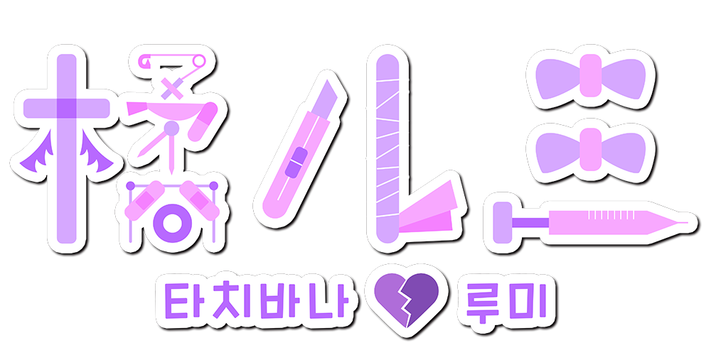

UTAU連続音ライブラリー

名前 : 橘ルミ(たちばな ルミ)
年齢 : 実年齢よりとても若く見える
身長 : 150cm
性格 : ちょいメンヘラ
好きなもの : エナジードリンク、コーヒー、スイーツ
嫌いなもの : さびしさ、心の痛み、人に左の手首が見えること(絶対ダメッ！！)

litmus* - 캐릭터 원안/발음 녹음/관리자
Twitter
Youtube
묘야 - 음성 제공(RVC 모델 제작용 데이터셋 제공)
Twitter
Youtube
みたう - 일러스트
Twitter
※본 음원은 RVC(AI커버)를 이용하여 제작하였으며, 사전에 음성을 제공해주신 묘야님과 협의를 거친 후 제작하였음을 밝힙니다.

본 음원은 OpenUtau에서 사용하는 것을 권장합니다.
일반 UTAU와의 호환성은 확인되지 않았습니다.
권장 렌더러 : moresampler
다운로드 시, 음원 이용 규약에 동의하는 것으로 간주합니다.